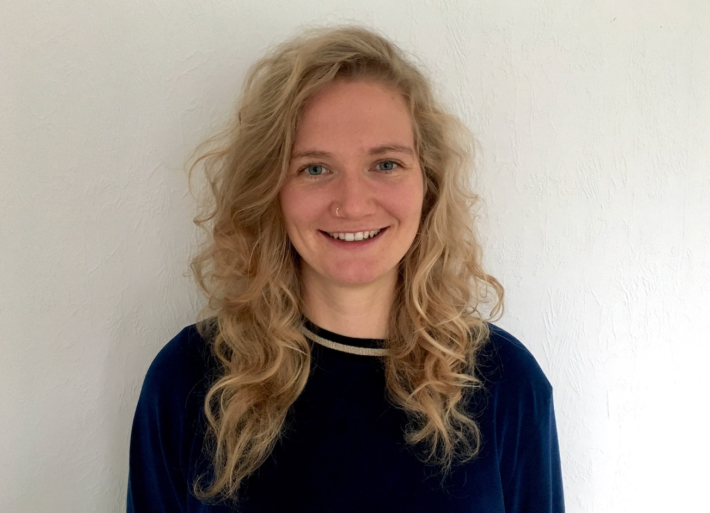

Invited Speakers
Lola Ugarte
Professor of Statistics, Public University of Navarre, Spain
Lola Ugarte is a Spanish statistician and professor at the Public University of Navarre where she leads the Spatial Statistics group. Currently she is the President of FENStatS (Eropean Federation of National Statistical Societies). In June 2024, she was awarded the SEIO (Spanish Society of Statistics) Medal.
For more information, visit her home page.
Dan Simpson
Machine Learning Engineer, .txt
Dan Simpson worked with Håvard at NTNU from 2010–2014 on INLA, SPDEs, and PC priors. It was very fun. He worked other places later, but they’re less important. These days, he lives in New York and thinks a lot about parsers and putting complex constraints on large language models. He has an infrequently updated blog that is probably not advisable to actually read, but has a couple of ok jokes if you’re willing to slog through it (https://dansblog.netlify.app/)

Andrea Riebler
Professor in Statistics, NTNU, Norway
Andrea Riebler is a Professor of Statistics at the Norwegian University of Science and Technology (NTNU), Trondheim. She earned her Ph.D. in 2010 from the University of Zurich and later held a postdoctoral fellowship there in statistical genomics. Her research focuses on spatial statistics, Bayesian inference, and biostatistical applications. She has led projects funded by the Norwegian Research Council, including work on Penalized Complexity Priors for Bayesian models. Andrea has contributed to developing the INLA software and the R package SUMMER, which focuses on mapping health indicators in low- and middle-income countries.
For more information, visit her home page.

Esmail Abdul Fattah
Postdoctoral Research fellow in High Performance Computing, CEMSE Division, KAUST, Saudi Arabia
Esmail’s research focuses on advancing computational tools and methodologies to improve Bayesian inference, bridging complex statistical theory with practical computational applications. He earned his PhD in Statistics at KAUST under the supervision of Professor Håvard Rue, as part of the Computational Bayesian Statistics research group. In recognition of his contributions to computational statistics, he received the prestigious 2023 Al-Kindi Research Award for Outstanding Research.
For more information, visit his home page.

Lisa B Gaedke-Merzhäuser
Postdoctoral Research fellow in Statistics, CEMSE Division, KAUST, Saudi Arabia
Lisa is a Postdoctoral Fellow in Statistics at King Abdullah University of Science and Technology in Saudi Arabia. She holds a PhD in Computational Science from Università della Svizzera italiana (USI) in Lugano, Switzerland. Her research interests lie in fusing statistical learning techniques with methods from high-performance computing. She has been developing INLA_DIST, a GPU-accelerated distributed memory implementation of INLA for large-scale spatio-temporal models.
